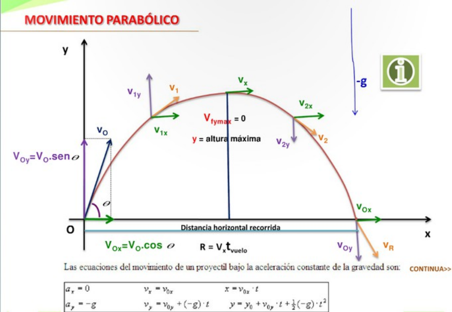

Cuando hablamos de tiro oblicuo nos referimos a un tipo de movimiento (también conocido como “tiro parabólico”) que se comporta como un movimiento rectilíneo uniforme en una dirección (horizontal) y como un movimiento rectilíneo uniformemente variado en otra dirección (vertical), es decir que en el eje vertical se comporta como un cuerpo en “caída libre“.
